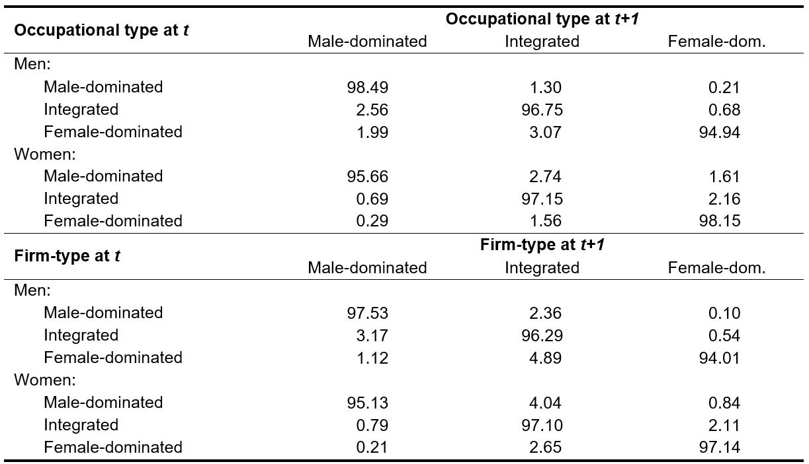
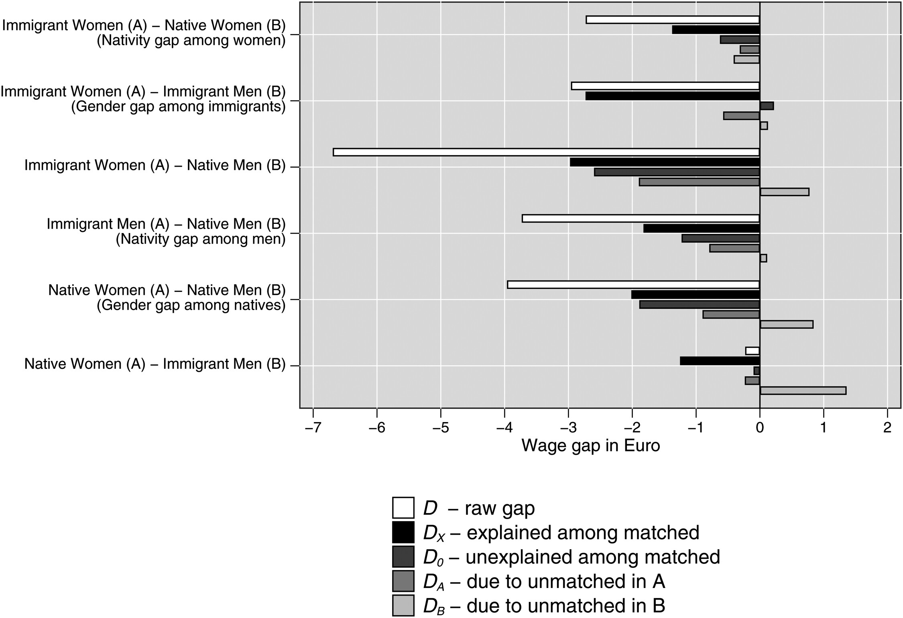
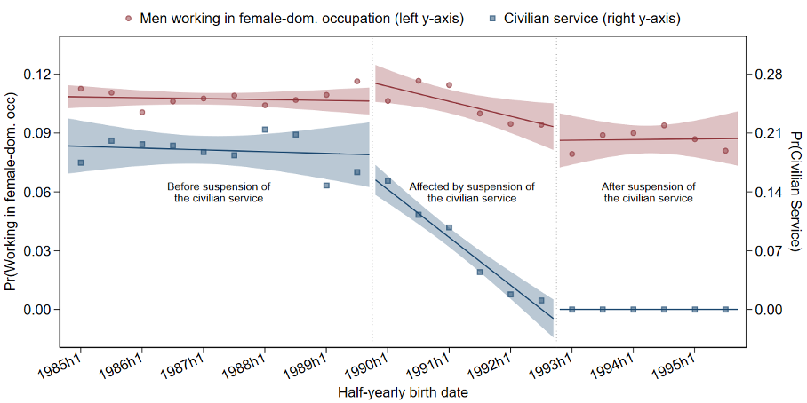
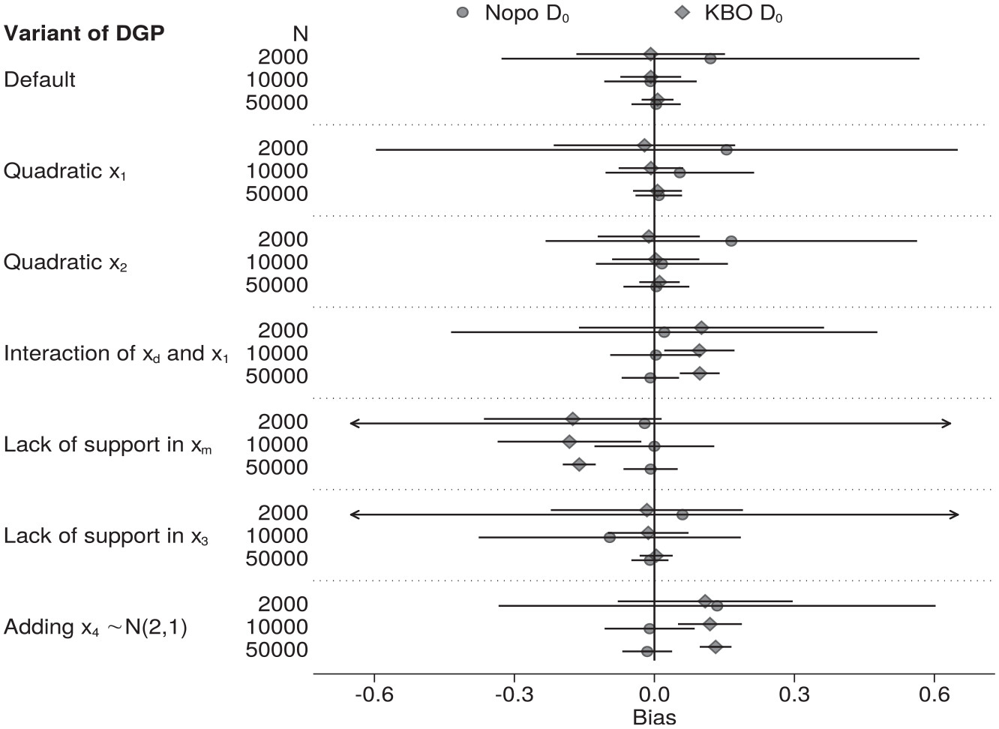
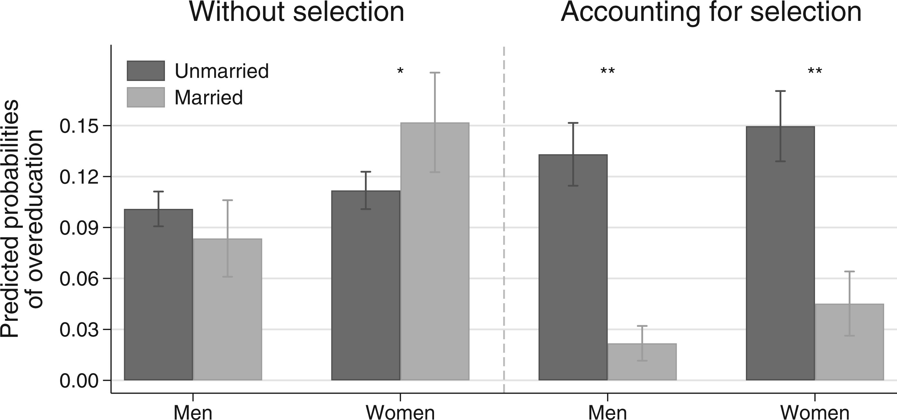
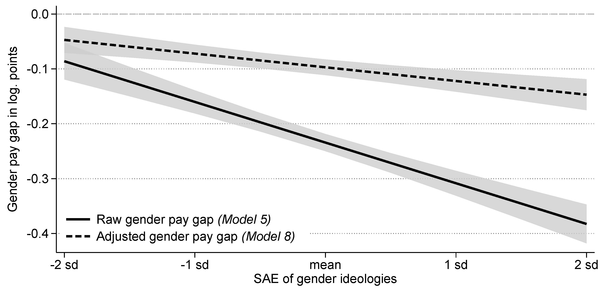

Maik Hamjediers

Postdoctoral Max Weber Fellow
Department of Political and Social Sciences
European University Institute
Welcome!
I am a postdoctoral Max Weber Fellow at the Department of Political and Social Sciences at the European University Institute.
My work focuses on social stratification, gender inequalities in the labor market and domestic sphere, and methods of empirical social research. Methodologically, I specialize in quantitative analyses of administrative and survey data, including research designs to draw causal inferences from observational data.
I am currently finishing my PhD in Sociology at Humboldt-Universität zu Berlin, where I also obtained a Bachelor and Master of Arts in Social Sciences. I have been a visitor at the departments of sociology of Brown University and University of Haifa.
You can find my complete CV here.
Publications
2024
Gender Compositions of Occupations and Firms Jointly Shape Switches from Gender-Atypical Towards More Gender-Typical Positions (with Eileen Peters). European Societies, 26 (4): 1170-1194.
Graphical abstract |
Supplementary |
Replication materials

Intersections and Commonalities: Using Matching to Decompose Wage Gaps by Gender and Nativity in Germany (with Maximilian Sprengholz). Work and Occupations, 51 (2): 249-286.
Graphical abstract |
Supplementary |
Replication materials

2023
Gender-Atypical Learning Experiences of Men Reduce Occupational Sex Segregation: Evidence from the Suspension of the Civilian Service in Germany. Gender & Society, 37 (4): 524-552.
Graphical abstract |
Supplementary |
Summary in Gender & Society-Blog

Comparing the Incomparable? Issues of Lacking Common Support, Functional Form Mis-Specification, and Insufficient Sample Size in Decompositions (with Maximilian Sprengholz). Sociological Methodology, 53 (2): 344-365.
Graphical abstract |
Supplementary |
Replication materials

2022
Marriage, the Risk of Overeducation, and Selection into Both: Evidence from Germany (with Paul Schmelzer). European Sociological Review, 38 (1): 73-87.
Graphical abstract |
Supplementary

2021
Can Regional Gender Ideologies Account for Variation of Gender Pay Gaps? The Case of Germany. Social Sciences, 10 (9): 347.
Graphical abstract |
Supplementary

2018
Do-files for working with SOEP spell data (with Paul Schmelzer & Tobias Wolfram). SOEP Survey Papers, Series G: 492.
Work in Progress
Tailored to Women, Provided to Men? Gendered Occupational Inequality in Access to Flexible Working-Time Arrangements (with Aljoscha Jacobi & Tabea Naujoks; accepted at Social Indicators Research).
Anti-Immigrant Bias in the Choice Between Punitive and Rehabilitative Justice (with Sascha Riaz; revised & resubmitted).
Gender-Specific Occupational Titles, Occupational Gender Compositions, and Occupational Prestige (with Ferdinand Geißler, Johannes Giesecke & Markus Schrenker).
The Flip Side of Gender Segregation: Men in Female-Dominated Occupations (with Marga Torre).
Occupations and Health in the Light of Occupational Segregation Between Women and Men (with Tobias Wolfram & Evelina T. Akimova).
"Do You Think That I Should Care?" Measuring Social Expectations About Cognitive Labor in Household Contexts (with Tabea Naujoks).
Teaching Experience
Statistics I (4 terms) & Statistics II (5 terms)
Humboldt-Universität zu Berlin, BA Lecture, 180 students
Topics: Descriptive statistics, statistical inference and hypothesis testing, linear and logistic regression, exploratory factor analysis
Faculty Award for Excellence in Teaching (winter term 2018/19)
Nominated for Humboldt Award for Excellence in Digital Teaching (winter term 2020/21)
Empirical Social Research I
Humboldt-Universität zu Berlin, with Dr. Ferdinand Geißler, BA Seminar, 150 students
Topics: Designing and implementing students' survey experiments
What others think you can do, but you can't do, and what you can do about it
Humboldt-Universität zu Berlin, BA Seminar, 25 students
Topics: Data wrangling, writing simulations to evaluate estimators, bootstrapping, further topics in linear regressions
Introduction to Social Science Research
Humboldt-Universität zu Berlin, BA Seminar, 25 students
Topics: Introduction to methodology of social science research, reading and writing academic manuscripts
Software Development
- NOPO: Stata module to perform Nopo (2008) matching decompositions (with Maximilian Sprengholz).
- SANKEYPLOT: Stata module to produce Sankey diagramms.